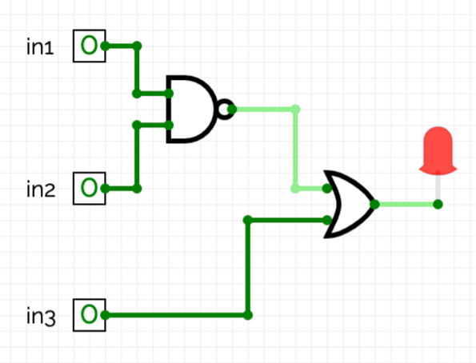
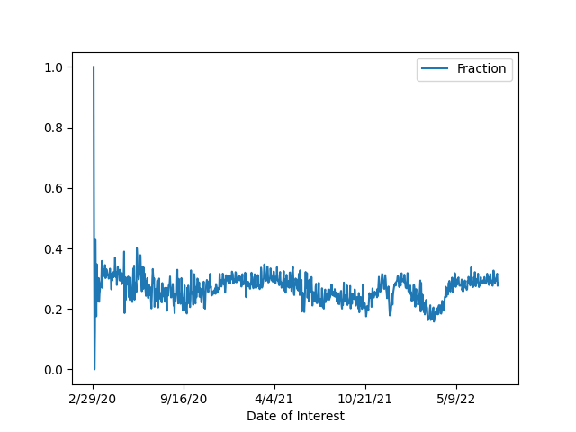

Submit the following programs via Gradescope:
- Due Date: 12 September Reading: Think CS: Chapters 1 & 2 & Lab1
Write a program that prints "Hello, World!" to the screen.
Hint: See the Lab 1.
- Due Date: 13 September Reading: Think CS: Chapter 4 & Lab 1
Write a program that draws a dodecagon (polygon with 12 sides).
Note: Whenever submitting a turtle program, choose a name for your file that is not turtle.py. When executing the "import turtle" statement, the computer first looks in the folder where the file is saved for the turtle module and then in the libraries (and other places on the path). So, it thinks the module is itself, causing all kinds of errors. To avoid this, name your program something like "myTurtle.py" or "program2.py".Hint: See the Lab 1.
- Due Date: 14 September Reading: Think CS: Chapter 4 & Lab 1
Write a program that implements the pseudocode ("informal high-level description of the operating principle of a computer program or other algorithm") below:
Repeat 9 times: Walk forward 100 steps Turn left 105 degrees Walk forward 52 steps Turn left 105 degrees Walk forward 100 steps Turn right 170 degree - Due Date: 15 September Reading: Think CS: Chapter 4 & Lab 1
Write a program that implements the incomplete code (start right from the red spot and return to there). The initial part of the code is provided if you like.
import turtle t = turtle.Turtle() t.pensize(5) t.shape("circle") #TODO: finish the rest code #hint: you may use color method of turtle. #The distance for a long line is 300. #The distance for a short line is 100.
- Due Date: 16 September Think CS: Chapter 2
Write a program that enter an integer for number of repetition, print "Practice makes perfect." that many times.
A sample run of your code is as follows.
Enter repetition time: 5 Practice makes perfect. Practice makes perfect. Practice makes perfect. Practice makes perfect. Practice makes perfect.
Lecture 2 and Lab 2
- Due Date: 19 September Think CS: Chapter 2 and
and
Section 4.4
Write a program that prints out the numbers counts down from 12 to 1. Need to use repetition statement.
The output of your program should be:
12 11 10 9 8 7 6 5 4 3 2 1 WOW
Hint: Use a loop and print out the index or loop variable.
- Due Date: 20 September Think CS: Chapters 2 & Chapter 9
Using the string commands introduced in Lab 2, write a Python program that prompts the user for a full name in the format of first name first and last name last, separated by a space. Use split method of string to extract last name and first name, then change last name to upper case using upper method of string. Print the full name in the format of last name first, first name followed, separated by comma. Enter user name, change it to lower case letters, followed by "@hunter.cuny.edu".
A sample run of your program should look like:
Enter name in format firstName lastName: John Smith name in LASTNAME, firstName format: SMITH, John Enter user name of email: Js216 email: js216@hunter.cuny.edu
Hint: Your program should be able to take any phrase the user enters and prints it, it in upper case letters, and it in lower case letters. To do that, you need to store the phrase in a variable and print variations of the stored variable.
- Due Date: 21 September Think CS: Chapters 2 & Chapter 9
Write a program that prompts the user to enter a phrase. Then for each character in the phrase, print out character, its ASCII code, and the next two letter in ASCII table.
A sample run of your program should look like:
Enter a phrase: I love Python! letter ASCII next_two_letter I 73 K 32 " l 108 n o 111 q v 118 x e 101 g 32 " P 80 R y 121 { t 116 v h 104 j o 111 q n 110 p ! 33 #And another sample run:
Enter a phrase: ABC letter ASCII next_two_letter A 65 C B 66 D C 67 EHint: If c is a character, ord(c) returns its ASCII code. For example, if c is 'I', then ord(c) returns 73. See Lab 2.
To right aligned the print out, use print("%6c %5i %15c"%(character, ASCII_code_of_character, next_two_letter_of_character)). You need to find out expression to represent character, ASCII_code_of_character, and next_two_letter_of_character.
Explanation: Use 6c since column header "letter" has 6 letters, c means character, for example, letter 'I' in string "I love Python!". Use 5i since column header "ASCII" has 5 letters, i means int, which is the ASCII code of the current letter. Use 15c since column header "next_two_letter" has 15 letters, c means a letter, which is the next_two_letter of the current letter.
- Due Date: 22 September Think CS: Chapters 2 & Chapter 9

(The cipher disk above shifts 'A' to 'N', 'B' to 'O', ... 'Z' to 'M', or a shift of 13. From secretcodebreaker.com.)Write a program that prompts the user to enter a word and then prints out the word with each letter shifted right by 13. That is, 'a' becomes 'n', 'b' becomes 'o', ... 'y' becomes 'l', and 'z' becomes 'm'.
Assume that all inputted words are in lower case letters: 'a',...,'z'.
A sample run of your program should look like:
Enter an all-small-letter string: zebra Enter a non-negative int to shift: 13 ciphered string: mroen
Here is another sample run of your program.
Enter an all-small-letter string: owqfka Enter a non-negative int to shift: 6 ciphered string: ucwlqg
Hint: See the example programs from Lecture 2.
- Due Date: 23 September Think CS: Chapters 2 & 4
Enter a phrase, reverse it, then capitalize each letter of the reversed string. Afterwards, get an abbreviation of the last letter of each word, starting from the last word to the first one.
A sample run of your program should look like:
input: City Univ of New York user reverse: kroY weN fo vinU ytiC user reverse upper: KROY WEN FO VINU YTIC user abbreviation: CUONY
Here is another sample run of your program.
input: Srbkts L Cizyjb user reverse: bjyziC L stkbrS user reverse upper: BJYZIC L STKBRS user abbreviation: SLC
Hint: See examples of range(start,stop,step) in Lecture 2 notes.
Lecture 3 and Lab 3
- Due Date: 28 September Think CS: Chapters 2 & 4
Modify the program from Lab 3 to show the shades of blue.
Your output should look similar to:
t = turtle.Turtle() t.penup() t.backward(100) t.left(90) t.backward(100) t.right(??) #you fill in a degree in ?? t.pendown() #TODO: draw right shade #TODO: move to the start direction of up shade #TODO: draw up shade - Due Date: 29 September Think CS: Chapters 2 & 4
Modify the program from Lab 3 to show the shades of pink and then repeat a similar loop where a loop variable goes from 255 (included) down to 0 (not included), gap step is decreased by 10 in each round.
A sample run of your program should look like:
- Due Date: 30 September Think CS: Chapters 2 & 4
Modify the program from Lab 3 to draw a brown turtle (color #960B00 or RGB code 150, 75, 0), stamp after each turn. The turtle moves forward by 100 in each round.
A sample run of your program should look like:
Hint: See Lab 3 for colors.
- Due Date: 3 October Think CS: Chapters 2 & 4
Write a program that asks the user for a name of an image .png file and the name of an output file. Your program should create a new image that sets red channel of the original image to be zero.
A sample run of your program should look like:
Enter name of the input file: csBridge.png Enter name of the output file: csBridge_wo_red.png
Sample input and resulting output files:

As another example, run the above program on shades of purple in a white background, as in the original figure shown in the left. Since purple is combination of red and blue, after setting red channel to be zero, which equals to remove red, the color of shades becomes blue in the modified figure, shown in the right.
In the original figure, background white is combined of 100% red, 100% blue, and 100% green. After removing red channel, the background has only blue and green, which changes to cyan color in the modified figure.
In the original figure, black color is combined of 0% red, 0% blue, and 0% green. After removing red channel, black color is still the same in the modified figure.
Sample input and resulting output files:

Note: before submitting your program for grading, remove the commands that show the image (i.e. the ones that pop up the graphics window with the image). The program is graded on a server on the cloud and does not have a graphics window, so, the plt.show() and plt.imshow() commands will give an error. Instead, the files your program produces are compared pixel-by-pixel to the answer to check for correctness.
Hint: See Lab 3.
- Due Date: 6 October Think CS: Chapter 2 & Section 8.2
Write a program that asks the user for a message and then prints the message out, one fewer word a line until there is only one word, then continue to add one word a line until becoming the original message.
A sample run of your program should look like:
Enter a phrase: how are you? how are you? how are how how are how are you?
Hint: See Lab 2 or Lecture 2 notes. Use split method to break the original message by a a list of words. Then use for-loop to display partial of the list. To display a list of words as a string, use ' '.join(list_of_words). For example,
lst = ['a', 'bc', 'd', 'e'] print(' '.join(lst[:2])) #display the first 2 elements of lst, joined by a space, #that is, display #a bcLecture 4 and Lab 4
- Due Date: 11 October Reading: Think CS: Chapter 4
Enter a list of names separated by semicolon. Display each name in a line, started by the first letter of first name, followed by a dot, a space, and last name.
A sample run of your program should look like:
Enter a list of names, separated by semicolon: George Washington;James Adam;Thomas Jefferson;James Madison;James Monroe G. Washington J. Adam T. Jefferson J. Madison J. Monroe
- Due Date: 12 October Reading: Think CS: Chapter 4
Write a program that asks users for output file name to save the following image. A sample run of the program:
Enter output file name: shape_t.pngHint: Here's a way to approach the problem:
- Create a 3D array with 30 x 30 x 3 using numpy.
- Set background color to be yellow, which is a combination of red and green.
- The horizontal line runs from 5 to 8 in vertical direction and from 5 to 25 in horizontal direction. Color is blue.
- The vertical line runs from 8 to 25 in vertical direction and from 13 to 16 in horizontal direction. Color is green.
- Enter an output file name and save it.
- Remove any imshow or show statement of plt before submission.
- Due Date: 13 October Think CS: Chapter 2 & Section 8.2
Create a program that creates a image of vertical blue and green stripes. Your program should ask the user for the size of your image, the name of the output file, and create a .png file of stripes. For example, if the user enters 10, your program should create a 10x10 image, alternating between blue and green vertical stripes.
A sample run of the program:
Enter the size: 10 Enter output file: stripes10.png
Another sample run of the program:
Enter the size: 50 Enter output file: stripes50.png
Note: before submitting your program for grading, remove the commands that show the image (i.e. the ones that pop up the graphics window with the image). The program is graded on a server on the cloud and does not have a graphics window, so, the plt.show() and plt.imshow() commands will give an error. Instead, the files your program produces are compared pixel-by-pixel to the answer to check for correctness.
Hint: See notes from Lecture 4.
- Due Date: 14 October Reading: Think CS: Section 2.7
You may need to use the following information. 1 feet = 30.48 centimeters 1 inch = 2.54 centimeters To round a decimal number
num by 2 decimal numbers, use round(num , 2). To roundnum to a whole number, use round(num ). Test your code using cm to feet and inchWrite a program that implements the pseudocode below:
(a) convert centimeters to feet (b) convert centimeters to feet and inches (c) convert feet and inches to centimeters
Some sample runs of your program should look like:
Choose Option a. When converting centimeters to feet, round the result to two decimal numbers after the decimal point.
(a) convert centimeters to feet (b) convert centimeters to feet and inches (c) convert feet and inches to centimeters Enter a or b or c: a Enter height in centimeters: 150 height is 4.92 feet
Choose Option b. Values of feet and inches are integers (whole numbers).
(a) convert centimeters to feet (b) convert centimeters to feet and inches (c) convert feet and inches to centimeters Enter a or b or c: b Enter height in centimeters: 150 height is 4 feet and 11 inches
Hints for converting centimeters to feet and inches.- Divide centimeters by 30.48, truncate decimal parts by int(
centimeters / 30.48 ). That is the number of feet. - Calculate the remaining, divide it by 2.54, get the whole number by int(
(centimeters - num_of_feet * 30.48) / 2.54 ). That is number of inches. - Optional: consider the possibility that number of inches is zero.
Choose Option b and the resulting inch is zero. In this situation, display only feet, not inch.
(a) convert centimeters to feet (b) convert centimeters to feet and inches (c) convert feet and inches to centimeters Enter a or b or c: b Enter height in centimeters: 92 height is 3 feet
Choose Option c. Round the centimeters to 1 decimal number.
(a) convert centimeters to feet (b) convert centimeters to feet and inches (c) convert feet and inches to centimeters Enter a or b or c: c Enter height in feet and inches, separated by a space: 4 11 height is 150 cm
In this task, take two inputs usingfeet_str, inches_str = input("Enter height in feet and inches, separated by a space: ").split() #convert feet_str to an int using feet = int(feet_str)Choose an option other than a, b, or c.
(a) convert centimeters to feet (b) convert centimeters to feet and inches (c) convert feet and inches to centimeters Enter a or b or c: 1 Wrong choice, please enter only a or b or c.
Hint: See Section 2.7.
- Due Date: 17 October Reading: Think CS: Chapter 2
Modify the program in the section Elevation Data & Flood Maps in Lab 4 to color the region just above the Sandy storm surge (6 feet) and less than or equal to 20 feet the color grey (50% red, 50% green, 50% blue). Also, modify your program to not show any graphics windows (plt.show()) but instead just compute and save the map to floodMap.png. Finally, change color red to yellow.
Generated floodMap.png looks as follows.
- Due Date: 18 October Reading: Think CS: Chapter 7 & Section 8.11
Following Lab 5, write a program that asks the user for the name of a png file and a threshold, print the number of pixels that are nearly white (the fraction of red, the fraction of green, and the fraction of blue are all above the given threshold). Also, calculate the percentage of those pixels divided by the total number of pixels in the picture.
For example, if your file was of the snow pack in the Sierra Nevada mountains in California in September 2014:

Suppose the file is saved as caDrought2014.png, then a sample run would be:
Enter file name: caDrought2014.png Enter threshold: 0.75 number of white pixels: 38010 percent of white pixels: 2.26 %
Note: for this program, you only need to compute the snow count. Showing the image will confuse the grading script, since it's only expecting the snow count and its percentage.
- Due Date: 19 October Reading: Burch's Logic & Circuits
Write a logical epxression that is satisfy the following figure.

Save your expression to a text file. See Lab 5 for the format for submitting logical expressions to Gradescope.
- Due Date: 20 October Reading: Burch's Logic & Circuits
Build a circuit that satisfy the following truth table. The missing gate is either an and or an or gate.in1 in2 in3 output 0 0 0 1 0 0 1 0 0 1 0 0 0 1 1 0 1 0 0 1 1 0 1 0 1 1 0 1 1 1 1 1 Save your expression to a text file. See Lab 5 for the format for submitting logical expressions to Gradescope.
- Due Date: 21 October Reading: Think CS: Section 10.25
Write a program that asks the user for a list of words (separated by spaces), count number of words, and calculate those words ending with letter 'a' or 'b', then calculate its fraction rounded by two decimal numbers after the decimal point. Your program should output the total number of words and the fraction that end in 'a' or 'b'. Assume that words are separated by spaces (and ignore the possibility of tabs and punctuation between words.)
A sample run of the program:
Enter a list of words, separated by a space: apple banana cantalope durian shrub number of words: 5 number of words ending with a or b: 2 fraction of words starting with a or b: 0.4
And another sample run of the program:
Enter a list of words, separated by a space: af bce gdfgb agcg edc dade fggga gb number of words: 8 number of words ending with a or b: 3 fraction of words ending with a or b: 0.38
Round num by two decimal numbers after the decimal point usinground(num, 2)
Approach 1
- First, count the number of words in the string the user entered (hint: use split method of a string to break the string into a list of words, then use len method of a list to find number of items in the list). Print out the number of words. Make sure this works before going onto the next part.
- Next, count the number of words ending in 'a' or 'b' (hint: find out the last letter of a word). Test that this part works before going on to the next step.
Approach 2
- First, count the number of words in the string the user entered (hint: count the number of spaces). Print out the number of words. Make sure this works before going onto the next part.
- Next, ignoring the last word (which is a special case and can be dealt with separately), count the number of words ending in 'a' or 'b' (hint: count the number of "a " or "b "). Test that this part works before going on to the next step.
- Last, check the last word to see if it ends in "a" or "b".
- Due Date: 24 October Reading: Think CS: Chapter 4 & Section 7.4 Implement the following pseudocode to convert a string to a decimal number. If the string contains any letter other than '0' or '1', exit and report errors.
input a string, put in variable string set num to be 0 set base to be the base of binary number initialize weight to be 1, for the least significant digit set length to be the number of letters of string Move i from the rightmost index downto the leftmost index put ith letter of string to variable ch if ch is '1' increase num by weight otherwise, if ch is not '0' print that Letter ch is not allowed in a binary string call exit method to exit current program #num is not updated when ch is '0' update weight by multiplying it with base print out num followed by prompt "num ="some sample input/output are as follows.
Enter a string with 0 or 1 only: 100101 num = 37
When an input string has more than one letter that is neither '0' or '1', only report the first violation that is closest to the least significant bit in the rightmost position.
Enter a string with 0 or 1 only: a20 Letter 2 is not allowed in binary string.
Hint: See Lecture 4 notes.
- Due Date: 25 October Reading: Burch's Logic & Circuits
Logical gates can be used to do arithmetic on binary numbers. For example, we can write a logical circuit whose output is one more than the inputted number. Our inputs are in1 and in2 and the outputs are stored in out1, out2, and out3.
Here is a table of the inputs and outputs:
Here is an analysis.Inputs Outputs Decimal
Numberin1 in2 Decimal
Numberout1 out2 out3 0 0 0 1 0 0 1 1 0 1 2 0 1 0 2 1 0 3 0 1 1 3 1 1 4 1 0 0 - When inputs are 00, 01, 10, 11, the expected output should be 01, 10, 11, 100, correspondingly.
- First, work on the least significant of output, out3. When input is 00, 01, 10, 11, the output should be 01, 10, 11, 100. The least significant digit of output, out3, is solely depending on the least significant digit of input in2. When in2 is 0, out3 is 1. When in2 is 1, out3 is 0.
- Next, work on the second digit of output, out2. Observe that when input is 01 or 10, output out2 is 1, otherwise, out2 is 0. Without loss of generality, check the case when input is 01, which means in1 is 0 and in2 is 1, that is, not in1 and in2. Equally, out2 is 1 when in1 and in2 are neither 00 nor 11. Use this approach, you can design a simpler circuit than our current one, with the same functionality.
- Finally, work on the most significant digit of output, out1. Only when in1 and in2 are both 1, can out1 become 1.
Toggle the inputs, by clicking on the input boxes for in1 and in2, and observe the output. Then translate the circuit into a logical expression.
Submit a text file (.txt) with each of the outputs on a separate line:
#Name: YourNameHere #Date: August 2022 #Logical expressions for a 3-bit incrementer out1 = ... out2 = ... out3 = ...
Where "..." is replaced by your logical expression (see Lab 5).Note: here's a quick review of binary numbers.
- Due Date: 26 October Reading: 10-mins to Pandas, DataCamp Pandas
Modify the program from Lab 6 that displays the NYC Covid-19 Cases. Your program should ask the user for the name of csv file, name of a borough and the name of the output file.
The program should compute the minimum, maximum, average, median and standard deviation of the covid-19 cases of the borough entered by the user and then display the fraction of the covid-19 daily cases in that borough over time and saves it using the file name entered by the user.
Note that mean and standard deviation are rounded to 3 decimal numbers after the decimal point. Read the attached csv file to see column names. Use exact the same column name in your program.IMPORTANT: The grading script expects the new column to be called 'Fraction'
A sample run of the program:
Enter a csv file: covid_daily_cases.csv Enter borough (Bronx, Brooklyn, Queens, Manhattan, Staten Island): Queens Enter output name: queensCovidFraction.png Min: 0 Max: 15201 Mean: 728.066 Median: 329.0 Standard Deviation: 1552.465
The file queensCovidFraction.png:

Note: before submitting your program for grading, remove the commands that show the image (i.e. the ones that pop up the graphics window with the image). The program is graded on a server on the cloud and does not have a graphics window, so, the plt.show() and plt.imshow() commands will give an error. Instead, the files your program produces are compared pixel-by-pixel to the answer to check for correctness.
- Due Date: 27 October Reading: 10-mins to Pandas, DataCamp Pandas
Write a program that analyzes children under six affected by lead in five boroughs of NYC in 2005 to 2016. Data is extracted from open data of NYC and saved in children_lead.csv. Your program should assume that above data file is in the same directory. The file has three columns: borough, year, and affected_children. Each row records the number of children under six whose blood lead level is at least 5 micrograms of lead per deciliter of blood (μg/dL) in the specific borough and year. Choose Option a to group by borough, report average of number of affected children in each borough. Enter a specific borough. Report the minimum, maximum, and average number of affected children in those years. Choose Option b to group by year, report average of number of affected children in each year. Enter a specific year. Report the minimum, maximum, and average number of affected children in the boroughs.
A sample run of your program to group by borough.
Enter a choice: a. group by borough b. group by year a average number of affected children by borough borough Bronx 3254.750000 Brooklyn 6966.333333 Manhattan 1837.250000 Queens 3750.500000 Staten Island 497.166667 Name: affected_children, dtype: float64 Enter a borough: Staten Island average number of affected children of Staten Island is 497.1666666666667 min number of affected children of Staten Island is 164 max number of affected children of Staten Island is 1049
Here is a run to group by year.
Enter a choice: a. group by borough b. group by year b average number of affected children by year year 2005 7467.8 2006 6924.6 2007 6095.8 2008 4080.4 2009 3043.4 2010 2790.2 2011 2287.4 2012 1635.4 2013 1440.4 2014 1310.0 2015 1073.8 2016 985.2 Name: affected_children, dtype: float64 Enter a year (2005 - 2016): 2014 average number of affected children in 2014 is 1310.0 min number of affected children in 2014 is 238 max number of affected children in 2014 is 2929
A sample run of your program to choose options other than a or b is as follows.
Enter a choice: a. group by borough b. group by year c wrong choice
Hint: See Lab 6.
- Due Date: 28 October Reading: Ubuntu Terminal Reference Sheet
Write an Unix shell script that prints: Hello!
Then prints on a new line: Greeting from $USER
where $USER is a built-in variable that stores the name of the user.A sample run of the program with user laptopuser:
Hello! Greeting from laptopuser
Submit a single text file containing your shell commands. See Lab 6 for details.
Note: The output will not display a username on Gradescope since there is no login on the cloud image where the grading script runs.- Due Date: 31 October Reading: Github Guide
In Lab 6, you created a github account. Submit a text file with the name of your account. The grading script is expecting a file with the format:
#Name: Your name #Date: August 2022 #Account name for my github account AccountNameGoesHere
Note: it takes a few minutes for a newly created github account to be visible. If you submit to gradescope and get a message that the account doesn't exist, wait a few minutes and try again.
- Due Date: 1 November Reading: 10-mins to Pandas, DataCamp Pandas
Refer to the program from Lab 7. Read country_internet.csv downloaded from kaggle.com. The file records number of internet users and population in different countries.
- ask the user to specify the output file,
- make a plot of the percentage of the internet users over the population of every country, and
- store the plot in the output file the user specified.
A sample run of the program:
Enter name of input file: country_internet.csv Enter name of output file: internet_users_percentage.png
which produces an output:
Note: The grading script is expecting that the label (i.e. name of your new column) is "Percentage".
- Due Date: 2 November Reading: Think CS Section 6.8
Write a program, using a function main() that enter a string and a letter, count the number of occurrence of that letter in the string. See Lab 7.
Enter a string: Hello, how are you? Enter a char: o number of 'o' in "Hello, how are you?" is 3
- Due Date: 3 NovemberReading: Think CS Chapter 6 and Chapter 7
Write a program that asks the user for a choice.
- If the choice is 1, then enter the name of an output file. Your program should then save the upper right quarter of the image to the output file specified by the user.
- If the choice is 1, then enter the name of an output file to save the middle portion (from 1/4 of height to 3/4 of height and from 1/4 of width to 3/4 of width) of the original figure.
A sample run of your program should look like:
Enter 1 to get upper right corner Enter 2 to get middle portion Your choice: 1 Enter input file name: magic_logo.png Enter output file name: magic_logo_upper_right.png
which would have as input and output:

Another sample run of your program should look like:
Enter 1 to get upper right corner Enter 2 to get middle portion Your choice: 2 Enter input file name: magic_logo.png Enter output file name: magic_logo_middle.png
which would have as input and output:
When entering any number other than 1 or 2, here is an output:
Enter 1 to get upper right corner Enter 2 to get middle portion Your choice: 3 wrong choiceHint: See sample programs from Lectures 4 and 6.
Hint: When input a choice other than '1' or '2', print "wrong choice" and exit the program. Otherwise, enter the input file name and output file name, then depending on the choice (either '1' or '2'), cut the image and save the portion to the output file.
Note: before submitting your program for grading, remove any commands that show the image (i.e. the ones that pop up the graphics window with the image). The program is graded on a server on the cloud and does not have a graphics window, so, the plt.show() and plt.imshow() commands will give an error. Instead, the files your program produces are compared pixel-by-pixel to the answer to check for correctness.
- Due Date: 4 November Reading: Section 10.25
Write a program that prompts the user to enter a list of names. Each person's name is separated from the next by a semi-colon and a space ('; ') and the names are entered lastName, firstName (i.e. separated by ', '). Your program should then print out the names, one per line, with the first names first followed by the last names.
A sample run of your program should look like:
Please enter your list of names: Epstein, Susan; St. John, Katherine; Vazquez-Abad, Felisa; Xu, Jia; Zamfirescu, Christina You entered: Susan Epstein Katherine St. John Felisa Vazquez-Abad Jia Xu Christina Zamfirescu Thank you for using my name organizer!Hint: See Section 10.25 for a quick overview of split(). Do this problem in parts: first, split the list by person (what should the delimiter be?). Then, split each of person's name into first and last name (what should the delimiter be here?).
- Due Date: 7 November Reading: Think CS: Section 7.4
Write a program that asks the user for the hour of the day (in 24 hour time), and prints
- "Good Morning" if it is strictly before 12,
- "Good Afternoon" if it is 12 or greater, but strictly before 17, and
- "Good Evening" otherwise.
A sample run:
Enter hour (in 24 hour time): 11 Good Morning
Another sample run:
Enter hour (in 24 hour time): 20 Good Evening
And another run:
Enter hour (in 24 hour time): 15 Good Afternoon
- Due Date: 8 November
Write a function, computePrice(), that takes two parameters: liquid (string) and the size type (string). The function should return a float for the price of the liquid of that size.
- coffee, small, 2.5
- coffee, medium, 2.75
- coffee, large, 3.00
- misto, small, 3.15
- misto, medium, 3.35
- misto, large, 3.7
- mocha, small, 3.5
- mocha, medium, 3.8
- mocha, large, 4.25
- tea, small, 2.35
- tea medium, 2.45
- tea large, 2.90
- any other choice, return -1
A sample run:
medium size tea: 2.45
And another:
medium size wine: -1
Hint: See Lab 8.
- Due Date: 9 November Reading: 10-mins to Pandas, DataCamp Pandas
Modify the parking ticket program from Lab 8 to do the following:
- Ask the user for the name of the input file.
- Ask the user for the attribute (column header) to search by.
A sample run:
Enter file name: Parking_Violations_Jan_2016.csv Enter attribute: Vehicle Color The 10 worst offenders are: WHITE 2801 WH 2695 GY 1420 BK 1153 BLACK 1054 BROWN 727 BL 656 GREY 574 SILVE 450 BLUE 412 Name: Vehicle Color, dtype: int64
And another run:
Enter file name: Parking_Violations_Jan_2016.csv Enter attribute: Vehicle Year The 10 worst offenders are: 0 3927 2015 1265 2014 1143 2013 1105 2012 772 2011 666 2007 643 2008 559 2010 509 2006 499 Name: Vehicle Year, dtype: int64
- Due Date: 10 November Reading: Think CS: Chapter 6
Fill in the missing function, monthString(), in the program, months.py (available at: https://github.com/stjohn/csci127). The function should take number between 1 and 12 as a parameter and returns the corresponding month as a string. For example, if the parameter is 1, your function should return "January". If the parameter is 2, your function should return out "February", etc.
Note: The grading scripts are expecting that your function is called monthString(). You need to use that name, since instead of running the entire program, the scripts are "unit testing" the function-- that is, calling that function, in isolation, with differrent inputs to verify that it performs correctly.
Hint: See notes from Lecture 7 and Lab 8.
- Due Date: 11 November Reading: 10-mins to Pandas, DataCamp Pandas
Write a program that asks the user for a CSV of collision data (see note below about obtaining reported collisions from NYC OpenData). Your program should then list the top three contributing factors for the primary vehichle of collisions ("CONTRIBUTING FACTOR VEHICLE 1") in the file.
A sample run:
Enter CSV file name: collisionsNewYears2016.csv Top three contributing factors for collisions: Driver Inattention/Distraction 136 Unspecified 119 Following Too Closely 37 Name: CONTRIBUTING FACTOR VEHICLE 1, dtype: int64
This assignment uses collision data collected and made publicly by New York City Open Data, and can be found at:
https://data.cityofnewyork.us/Public-Safety/NYPD-Motor-Vehicle-Collisions/h9gi-nx95.
Since the files are quite large, use the "Filter" option and choose your birthday in 2016 and "Export" (in CSV format) all collisions for that day. We will use this data set for future programs, so, instead of downloading the test files multiple times, save a copy for future use.Hint: See Lab 8 for accessing and analyzing structured data.
- Due Date: 14 November Reading: Think CS Chapter 6
Write two functions, triangle() and nestedTriangle(). Both functions take two parameters: a turtle and an edge length. The pseudocode for triangle() is:
triangle(t, length): 1. If length > 10: 2. Repeat 3 times: 3. Move t, the turtle, forward length steps. 4. Turn t left 120 degrees. 5. Call triangle with t and length/2.The pseudocode for nestedTriangle() is very similar:
nestedTriangle(t, length): 1. If length > 10: 2. Repeat 3 times: 3. Move t, the turtle, forward length steps. 4. Turn t left 120 degrees. 5. Call nestedTriangle with t and length/2.A template program, nestingTrianges.py, is available on the CSci 127 repo on github. The grading script does not run the whole program, but instead tests your function separately ('unit tests') to determine correctness. As such, the function names must match exactly (else, the scripts cannot find it). Make sure to use the function names from the github program (it is expecting triangle() and nestedTriangle()).
A sample run:
Enter edge length: 160
which would produce:

- Due Date: 15 November Reading: Think CS: Chapter 6
Write a function, computeFare(), that takes as two parameters: the zone and the ticket type, and returns the Long Island Railroad fare.
- If the zone is 1 and the ticket type is "peak", the fare is 8.75.
- If the zone is 1 and the ticket type is "off-peak", the fare is 6.25.
- If the zone is 2 or 3 and the ticket type is "peak", the fare is 10.25.
- If the zone is 2 or 3 and the ticket type is "off-peak", the fare is 7.50.
- If the zone is 4 and the ticket type is "peak", the fare is 12.00.
- If the zone is 4 and the ticket type is "off-peak", the fare is 8.75.
- If the zone is 5, 6, or 7 and the ticket type is "peak", the fare is 13.50.
- If the zone is 5, 6, or 7 and the ticket type is "off-peak", the fare is 9.75.
- If the zone is greater than 8, return a negative number (since your calculator does not handle inputs that high).
A template program, LIRRtransit.py, is available on the CSci 127 repo on github. The grading script does not run the whole program, but instead tests your function separately ('unit tests') to determine correctness. As such, the name of the function must match exactly (else, the scripts cannot find it).
A sample run:
Enter the number of zones: 4 Enter the ticket type (peak/off-peak): off-peak The fare is 8.75
And another:
Enter the number of zones: 6 Enter the ticket type (peak/off-peak): peak The fare is 13.5
Hint: See Lab 8.
- Due Date: 16 November Reading: Folium Tutorial
Write a program that uses folium to make a map of New York City. Your map should be centered at (40.75, -74.125) and include a marker for the main campus of Hunter College. The HTML file your program creates should be called: nycMap.html
Hint: See Lab 9.
- Due Date: 17 November Reading: Folium Tutorial
Using folium (see Lab 9), write a program that asks the user for the name of a CSV file, name of the output file, and creates a map with markers for all the traffic collisions from the input file.
A sample run:
Enter CSV file name: collisionsThHunterBday.csv Enter output file: thMap.html
which would produce the html file:
(The demo above is for March 18, 2016 using the time the collision occurred ("TIME") to label each marker and changed the underlying map with the option: tiles="Cartodb Positron" when creating the map.)
This assignment uses collision data collected and made publicly by New York City Open Data. When creating datasets to test your program, you will need to filter for both date (to keep the files from being huge) and that there's a location entered. The former is explained above; to check the latter, add the additional filter condition of "LONGITUDE is not blank".
Hint: For this data set, the names of the columns are "LATITUDE" and "LONGITUDE" (unlike the previous map problem, where the data was stored with "Latitude" and "Longitude").
- Due Date: 18 November Reading: Think CS: Chapter 3
The program, errorsHex.py, has lots of errors. Fix the errors and submit the modified program.
Hint: See Lab 9.
- Due Date: 21 November Reading: Think CS: Chapter 6 and Folium Tutorial
Fill in the following functions in a program that maps GIS data from NYC OpenData CSV files and marks the current location and closest point:
- getData() that asks the user for the name of the CSV and returns a dataframe of the contents.
- getColumnNames() that asks the user for the exact name of the columns that contains the latitude and longitude and returns those values as a tuple. Since the NYC OpenData files use different names for the columns in different datasets (such as "Lat", "Latitude", "LATITUDE" for latitude), the program asks for the name of the column as well as the name of the data file.
- getLocale() asks the user for latitude and longitude of the user's current location and returns those floating points numbers.
- computeDist() that computes the squared distance
between two points (x1,y1) and (x2,y2):
(x1-x2)2 + (y1-y2)2
A sample run to find the closest CUNY campus to the Brooklyn Navy Yard:
Enter CSV file name: cunyLocations.csv Enter column name for latitude: Latitude Enter column name for longitude: Longitude Enter current latitude: 40.7021 Enter current longitude: -73.9708 Enter output file: closestCUNY.html
which would produce the html file:
A template program, closestPoint.py, is available on the CSci 127 repo on github. The grading script does not run the whole program, but instead runs each of your functions separately ('unit tests') to determine correctness. As such, the names of the functions must match exactly the ones listed above (else, the scripts cannot find them).
Hint: See Lab 9.
- Due Date: 22 November Reading: Think CS: Chapter 6
Fill in the missing functions:
- average(region): Takes a region of an image and returns the average red, green, and blue values across the region.
- setRegion(region,r,g,b): Takes a region of an image and red, green, and blue values, r, g, b. Sets the region so that all points have red values of r, green values of g, and blue values of b.
The functions are part of a program that averages smaller and smaller regions of an image until the underlying scene is visible (inspired by the elegant koalas to the max).
For example, if you inputted our favorite image, you would see (left to right):


and finally:
A template program, averageImage.py, is available on the CSci 127 repo on github. The grading script does not run the whole program, but instead runs each of your functions separately ('unit tests') to determine correctness. As such, the names of the functions must match exactly the ones listed above (else, the scripts cannot find them).
Hint: See notes from Lecture 8.
- Due Date: 23 November Reading: Chapter 8
Modify the program from Lab 10 that makes a turtle walk 100 times. Each "walk" is 10 steps forward and the turtle can turn 0,1,2,...,359 degrees (chosen randomly) at the beginning of each walk.
A sample run of your program:

- Due Date: 28 November Reading: Chapter 8
Write a program that asks the user to enter a string. If the user enters an empty string, your program should continue prompting the user for a new string until they enter a non-empty string. Your program should then print out the string entered.
A sample run of your program:
Enter a non-empty string: That was empty. Try again. Enter a non-empty string: That was empty. Try again. Enter a non-empty string: Mihi cura futuri You entered: Mihi cura futuri
Hint: See Lab 10.
- Due Date: 29 November Reading: Ubuntu Terminal Reference Sheet
Write an Unix shell script that does the following:
- Creates a directory, projectFiles.
- Creates 3 additional directories (as subdirectories of projectFiles): source, data, and results.
Hint: See Lab 10.
- Due Date: 30 November Reading: MIPS Wikibooks
Write a simplified machine language program that prints: Hello, World!
See Lab 11 for details on submitting the simplified machine language programs.
Hint: You may find the following table useful:

(Image from wikimedia commons)Hint: The grading scripts are matching the phrase exactly, so, you need to include the spacing and punctuation.
- Due Date: 1 December Reading: MIPS Wikibooks
Write a simplified machine language program that has register $s0 loop through the numbers 0, 5, 10, ..., 50.
See Lab 11 for details on submitting the simplified machine language programs.
- Due Date: 2 December Reading: Ubuntu Terminal Reference Sheet
Using Unix shell commands, write a script that counts the number of .py files in current working directory.
Hint: See Lab 11.
- Due Date: 5 December Reading: Cplusplus Tutorial
Write a C++ program that prints "Hello, World!" and "Hello, C++!" in two separate lines to the screen.
Hint: See Lab 12 for getting started with C++.
- Due Date: 6 December Reading: Cplusplus Tutorial
Write a C++ program that will print "Mihi cura futuri" 10 times.
The output of your program should be:
Mihi cura futuri Mihi cura futuri Mihi cura futuri Mihi cura futuri Mihi cura futuri Mihi cura futuri Mihi cura futuri Mihi cura futuri Mihi cura futuri Mihi cura futuri
Hint: See Lab 12 for getting started with C++.
- Due Date: 7 December Reading: Cplusplus Tutorial
Write a C++ program that converts kilometers to miles. Your program should prompt the user for the number of kilometers and then print out the number of miles.
A useful formula: miles = 0.621371* kilometers.
See Lab 4 for designing Input-Process-Output programs and Lab 12 for getting started with C++.
- Due Date: 8 December Reading: Cplusplus Tutorial
Write a C++ program program that asks the user for a number and draws a triangle of that height and width using 'character graphics'.
A sample run:
Enter a number: 6 * ** *** **** ***** ******
Another sample run:
Enter a number: 3 * ** ***
- Due Date: 9 December Reading: Cplusplus Tutorial
Write a C++ program that asks the user for the month of the year (as a number), and prints
- "Happy Winter" if it is strictly before 3 or strictly larger than 11,
- "Happy Spring" if it is 3 or greater, but strictly before 7, and
- "Happy Summer" if it is 7 or greater, but strictly before 9, and
- "Happy Fall" otherwise.
A sample run:
Enter month (as a number): 12 Happy Winter
Another sample run:
Enter month (as a number): 8 Happy Summer
And another run:
Enter month (as a number): 11 Happy Fall
- Due Date: 12 December Reading: Cplusplus Tutorial
Write a C++ program that asks the user for the year born, and continue asking until the number entered that is 2018 or earlier.
A sample run:
Please enter year born: 2023 Entered a future year Please enter year born: 2025 Entered a future year Please enter year born: 2000 You entered: 2000
Hint: See Lab 10 for similar programs in Python. Rewrite in C++.
- Due Date: 13 December Reading: Cplusplus Tutorial
Write a complete C++ program that prints the change in population of the the United States:
p = p + Bp - Dpwhere p is the population, B is the birth rate of 12.4 births for every 1000 people (12.4/1000) each year, and D is the death rate of 8.4 for every 1000 people (8.4/1000). In 2017, the population of United States was 325.7 million. Your program should ask the user for the number of years and print expected population over those years starting from 2017. Each line should have: the year and the population (in millions).A sample run:
Please enter the number of years: 10 Year 2017 325.70 Year 2018 327.00 Year 2019 328.31 Year 2020 329.62 Year 2021 330.94 Year 2022 332.27 Year 2023 333.60 Year 2024 334.93 Year 2025 336.27 Year 2026 337.61
Note: if you would like to make the output a bit prettier, you can include a command to limit the number of places after the decimal point printed to 2 before you print:
cout << setprecision(2) << fixed;
- Due Date: 14 December Reading: Cplusplus Tutorial
Write a C++ program that asks the user for a whole number between -31 and 31 and prints out the number in "two's complement" notation, using the following algorithm:
- Ask the user for a number, n.
- If the number is negative, print a 1 and let x = 32 + n.
- If the number is not negative, print a 0 and let x = n.
- Let b = 16.
- While b > 0.5:
- If x >= b then print 1, otherwise print 0
- Let x be the remainder of dividing x by b.
- Let b be b/2.
- Print a new line ('\n').
A sample run:
Enter a number: 8 001000
Another run:
Enter a number: -1 111111